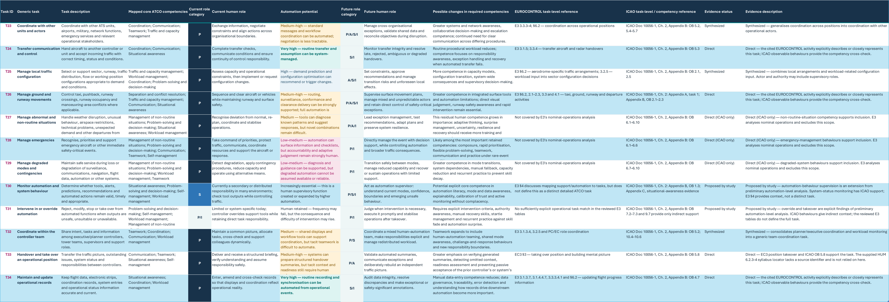

Tasks and human roles
The study’s 34-task taxonomy supports a task-by-task analysis of automation and the residual human role. Its findings are indicative and require validation against specific concepts and safety cases.
Task taxonomy and residual human roles
The analysis of SESAR concepts and the Automation Roadmap gave us insight into how technology and automation can affect different tasks. The Automation Roadmap also introduced the notion of Levels of Automation (LoAT), a logical framework for analysing how authority is allocated between humans and automation.
The LoAT framework breaks down each task into four distinct information processing phases:
- information acquisition;
- information analysis;
- decision/action selection;
- action implementation.
If we use the example of conflict management as an ATCO task, these stages roughly correspond to the following task elements:
- Conflict detection,
- Conflict assessment and measurements,
- Solution generation,
- Solution selection/decision,
- Issue instruction/clearance/intervention,
- Monitor execution.
Combining the task-level breakdown with LoAT logic, we created a list of generic ATCO tasks that is broad enough to cover most use cases and ATS units, yet specific enough to enable analysis of the changes. This generic ATCO task taxonomy is built on work done previously by ICAO and Eurocontrol, and comprises 34 generic tasks across four areas:
- Information acquisition, situational awareness and workload,
- Conflict detection, separation, and traffic management,
- Clearances, monitoring, communication and coordination, and
- Local operations, non-routine situations, automation and supporting tasks.
The study developed its 34-task taxonomy from EUROCONTROL’s Integrated Task and Job Analysis of Air Traffic Controllers and the Episode 3 Today’s Operations Task Analysis. It cross-checked the result against ICAO Doc 10056-1 (2022), including example observable behaviours. Additional study-level generalisations address non-routine operations and automation. The taxonomy is an analytical framework for this study. Its source mapping is recorded in generic task taxonomy of the Final Report.
We used the task taxonomy to map tasks to core ATCO competencies (using the existing ICAO/EASA competency reference), describe current human roles, estimate automation potential, and assess how the human role would evolve if full automation potential were realised. We then completed the analysis with also assessing the possible changes in the required competencies as well.
We described the human role using a classification derived from the LoAT logic, focusing on the residual human role. In this approach, the human can “Perform” a task, “Approve” the solution provided by automation, “Supervise” the automated system as it performs a task, “Intervene” and take over when the system is not performing up to the expected standards and functionality, or be “Non-critical/not relevant anymore”, meaning that the residual human role is not relevant from a qualification or licensing perspective. This classification is referred to as the P/A/S/I/N logic.
We performed the analysis to explore the future effects of increasing automation; therefore, the results are indicative only and should be tested against the relevant operational concepts and safety cases before any further use outside this study.
Competencies under automation
The task analysis also explores how core competencies may evolve if each task’s full automation potential is realised.
The foreseen evolution of competency under automation. Source: study elaboration.
| Competency or requirement | Expected evolution |
|---|---|
| Situational awareness | Remains fundamental but expands into system, mode, data-quality, uncertainty and automation awareness. |
| Traffic and capacity management | Moves from tactical traffic manipulation toward constraint-setting, supervisory flow management and network optimisation. |
| Separation and conflict resolution | Moves from routine execution toward assurance, approval, intervention and recovery, while retaining fallback understanding. |
| Communication | Less routine phraseology; more ambiguity resolution, urgent communication, exception handling and cross-system negotiation. |
| Coordination | Less routine transaction processing; more exception negotiation, shared-intent management and responsibility-boundary awareness. |
| Management of non-routine situations | Becomes substantially more important as the human role concentrates on novelty, emergencies, disruption and degraded operations. |
| Problem-solving and decision-making | Becomes less frequent in routine operations but more difficult, uncertain and consequential at the human–automation authority boundary. |
| Self-management | Expands to vigilance, trust calibration, startle management, readiness, accountability and maintaining competence despite limited practice. |
| Workload management | Shifts from sustained traffic workload to underload, attention management, alert discipline, mode transitions and sudden workload peaks. |
| Teamwork | Expands into human–automation teaming, shared mode awareness and coordination across interconnected automated organisations. |
| Automation and system management (additional competency added by the study) | Understand, monitor and manage automated functions, their modes, authority, data dependencies, uncertainty, interactions, limitations and failure behaviour. |
| Skill maintenance (additional enabler added by the study) | Ensure that rarely exercised intervention, manual fallback and recovery competencies remain available through recurrent simulation, deliberate practice, recency rules and realistic degraded-mode assessment. |
Based on the evolution of tasks and changes in the human role, we provisionally added a competency for automation and system management, and an important enabler for skill maintenance to ensure that competencies rarely used in an automated environment remain available.
Current and future ATCO profiles
The comparison of current and future generic ATCO profiles illustrates the potential changes when systems become largely automated.
Comparison of a current and future generic ATCO profile. Source: study elaboration.
| Dimension | Current ATCO | Future ATCO |
|---|---|---|
| Primary role | Directly performs most operational tasks. | Approves, supervises and intervenes; directly performs mainly exceptional and fallback tasks. |
| Control method | Continuously constructs and implements the traffic solution. | Manages the boundaries, objectives and validity of automation-generated solutions. |
| Situational awareness | Traffic-centred: aircraft positions, intentions, conflicts and clearances. | System-and-traffic-centred: traffic state plus automation mode, assumptions, confidence, limitations and data quality. |
| Separation | Detects conflicts, generates solutions, selects actions and maintains separation. | Assures automated separation, validates critical decisions and recovers from incorrect or unavailable automation. |
| Decision-making | Frequent tactical decisions across routine traffic. | Less frequent but more consequential decisions involving uncertainty, automation failure and competing system objectives. |
| Traffic management | Builds sequences and trajectories tactically. | Sets constraints and priorities; evaluates optimisation across local and network effects. |
| Communication | Routine voice and coordination are major workload components. | Routine exchanges are automated; human communication concentrates on ambiguity, negotiation, urgency and disruption. |
| Workload | Manages sustained task volume and competing aircraft. | Manages vigilance, attention, automation transitions, bursts of exception workload and sudden takeover. |
| Non-routine operations | Important but secondary to routine control. | Central residual human function and a dominant reason for retaining a licensed ATCO. |
| Technical understanding | Operational user of surveillance, flight-data and support tools. | Critical supervisor of an integrated automated system, including dependencies, confidence and failure modes. |
| Teamwork | Human–human controller teamwork. | Human–automation teaming plus coordination across increasingly automated organisations. |
| Skill maintenance | Routine operations continuously exercise core controlling skills. | Rare interventions create substantial skill-decay and recency risks, requiring deliberate recurrent practice and credible fallback strategies. |
The complete task taxonomy

